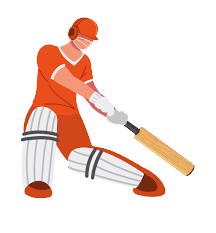
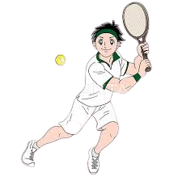

| Most Goals by a player
in a
calendar year |
| Year |
Player |
Club |
Goals |
| 2019 |
Robert Lewandowski |
Bayern Munich |
48 |
| 2018 |
Lionel Messi |
Barcelona |
47 |
| 2017 |
Harry Kane |
Tottenham |
49 |
| 2016 |
Lionel Messi |
Barcelona |
50 |
Soccer
Soccer, also known as football, has achieved unparalleled global popularity, firmly establishing itself
as
the world's most widely followed and played sport. With its roots dating back centuries, soccer has
transcended geographical, cultural, and language barriers to capture the hearts of billions of fans
around
the globe. The sport's simplicity and accessibility contribute to its broad appeal, as all that is
required
to play is a ball and an open space. From informal neighborhood games to prestigious international
tournaments like the FIFA World Cup, soccer has the remarkable ability to unite people from diverse
backgrounds, fostering a sense of camaraderie and shared passion. The thrill of watching skilled players
navigate the field, the intense rivalries between teams, and the moments of sheer brilliance that unfold
on
the pitch have captivated audiences worldwide.
Cricket
Cricket, a sport known for its rich traditions and captivating gameplay, has gained significant
popularity
across the globe. Originating in England, cricket has managed to amass a massive following, particularly
in
countries such as India, Australia, England, Pakistan, and South Africa. The popularity of cricket can
be
attributed to its compelling blend of skill, strategy, and drama that
unfolds over several hours or even days.
Cricket's enduring appeal lies in its ability to evoke
intense emotions and create unforgettable moments.
From the iconic Ashes series between England and Australia to the fervent
atmosphere of the Indian Premier League, cricket tournaments have become cultural phenomena, uniting
nations
and sparking nationwide celebrations.

| Most Runs by a player
in a
calendar year |
| Year |
Player |
Team |
Runs |
| 2019 |
Virat Kohli |
India |
2455 |
| 2018 |
Virat Kohli |
India |
2735 |
| 2017 |
Virat Kohli |
India |
2818 |
| 2016 |
Virat Kohli |
India |
2591 |
| Highest ATP Ranked
Singles Players |
| Player |
Country |
Highest Rank |
| Novak Djokovic |
Serbia |
389 |
| Roger Federer |
Switzerland |
310 |
| Pete Sampras |
USA |
286 |
| Ivan Lendl |
Czechoslovakia |
270 |
Tennis
Tennis, a sport renowned for its elegance, precision, and intense battles on the court, has garnered
immense
popularity worldwide. With its roots tracing back to 19th-century England, tennis has evolved into a
global
phenomenon, captivating fans across continents.
The popularity of tennis stems from its unique combination of athleticism, skill, and mental fortitude.
The sport's fast-paced nature and the sheer spectacle of players pushing themselves to the limits
make
for captivating viewing experiences.
Tennis has produced iconic rivalries that have captured the imagination of fans throughout history. From
the
classic battles between Bjorn Borg and John McEnroe to the legendary matchups of Roger Federer, Rafael
Nadal, and Novak Djokovic, these rivalries have added a thrilling dimension to the sport.
